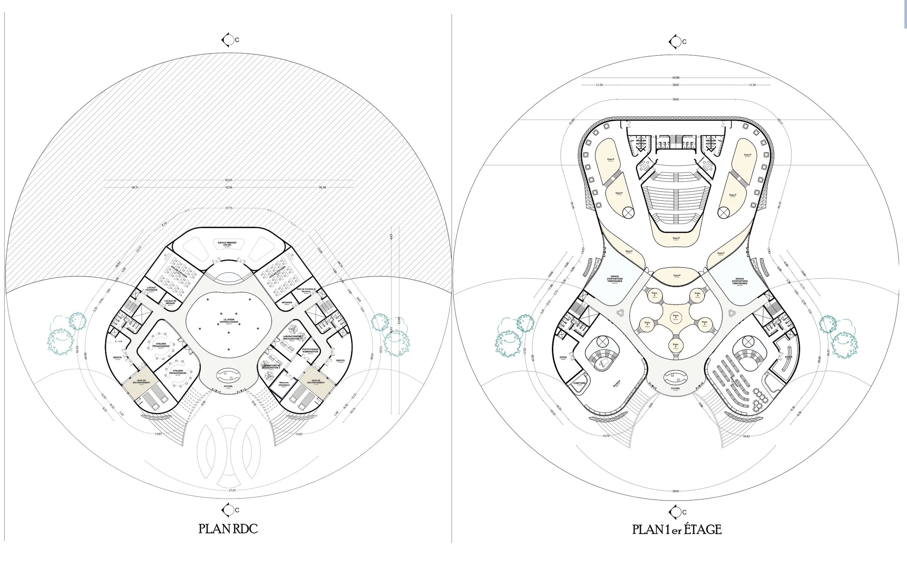
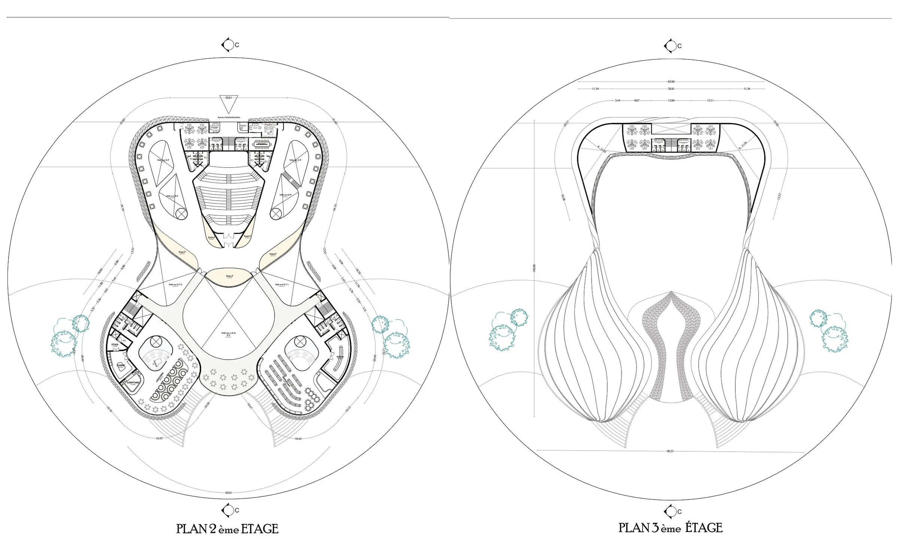
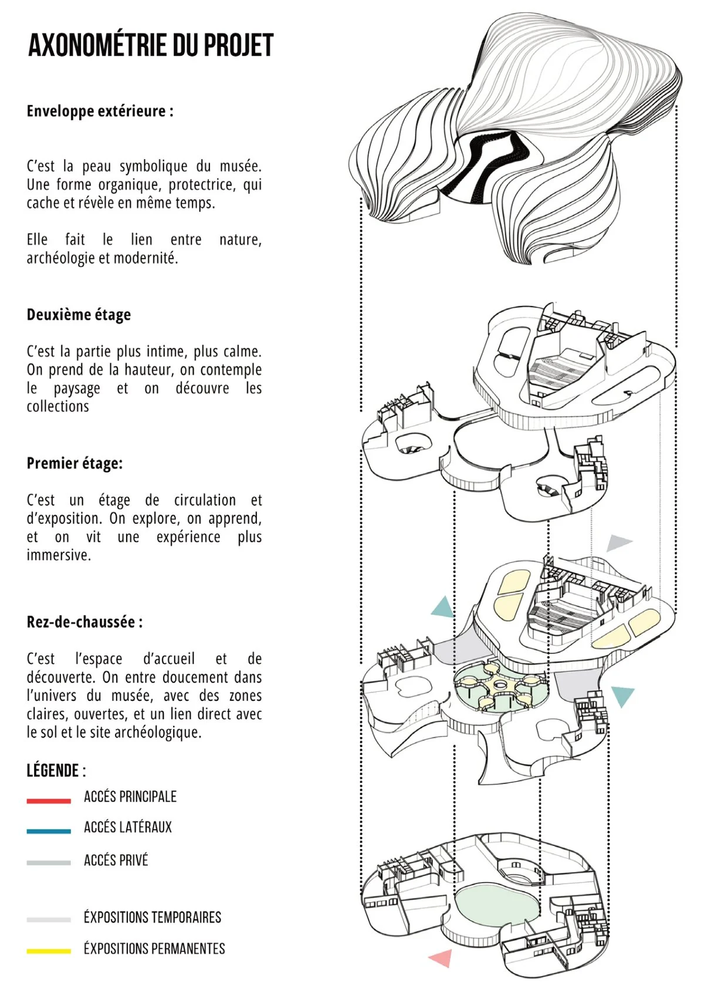
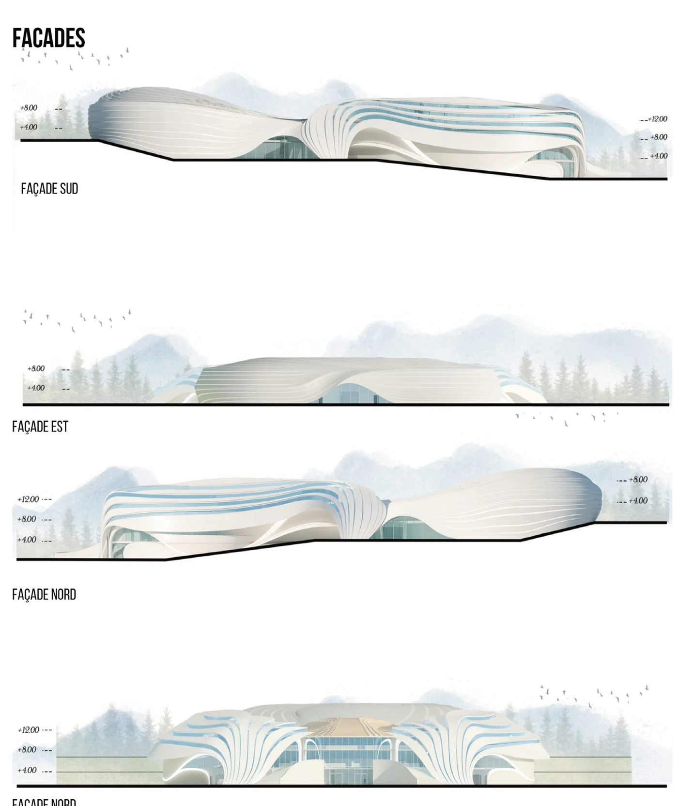
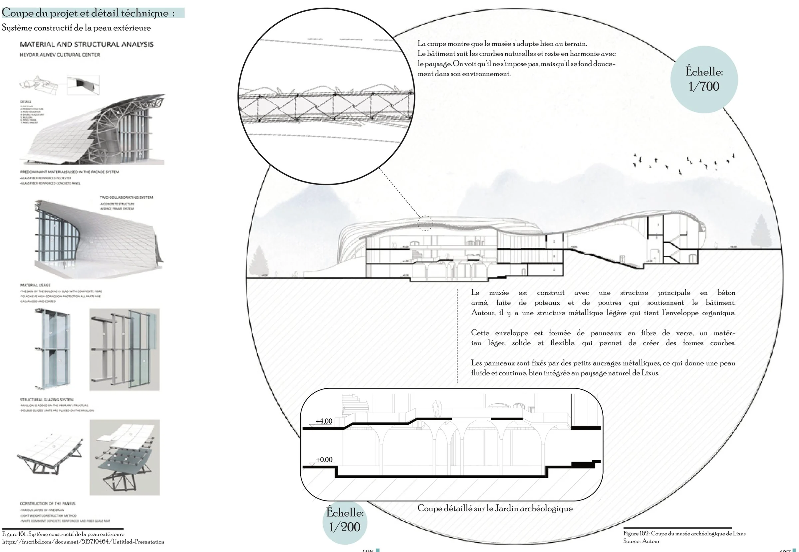
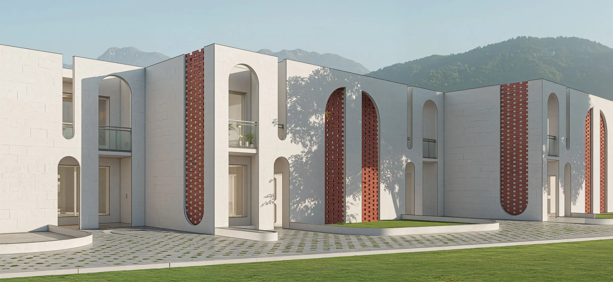

← All projects/Archaeology Museum
Archaeology Museum
The heart of the Lixus project: an organic form rising from the relief, where visitors discover, understand and feel the history of the site.
A museum that emerges from the ground.
The Lixus project works at two complementary scales, united by one guiding concept: unveiling, revealing the past as if lifting a veil on history. At the architectural scale, the archaeology museum is the heart and high point of the route.
Its programme combines exhibitions, restoration laboratories, teaching workshops and an immersive augmented-reality space. Through guided visits, workshops, talks and school programmes, the museum connects the public to the history and culture behind the objects it keeps.
- Immersive space (VR-AR)
- 410 m²
- Archaeological garden
- 496 m²
- Temporary exhibitions
- 2 × 225 m²
- Labs & workshops
- 2 restoration labs, 2 teaching workshops
Two shells around a central void.



Read from the skin inwards.
- 01
Envelope
The symbolic skin of the museum: an organic, protective form that hides and reveals at once, linking nature, archaeology and modernity.
- 02
Second floor
The most intimate, quiet level. Visitors gain height, contemplate the landscape and discover the collections.
- 03
First floor
Circulation and exhibitions: visitors explore, learn and live a more immersive experience.
- 04
Ground floor
Welcome and discovery: bright, open areas with a direct link to the ground and the archaeological site.

Concrete inside, fibreglass outside.
The section shows a museum that adapts to the terrain: it follows the natural curves and blends into the landscape instead of imposing itself.
A reinforced-concrete frame of columns and beams carries the building. Around it, a light steel structure holds the organic envelope of glass-fibre panels, light, strong and flexible enough for curved forms, fixed by small metal anchors into a fluid, continuous skin.


Next project 05 Pavillons du Repos →Open to opportunities
Let's build something together.
Looking for an architect who can carry a project from the first sketch to the construction detail? I’d be glad to talk about a position, a collaboration or your next project.